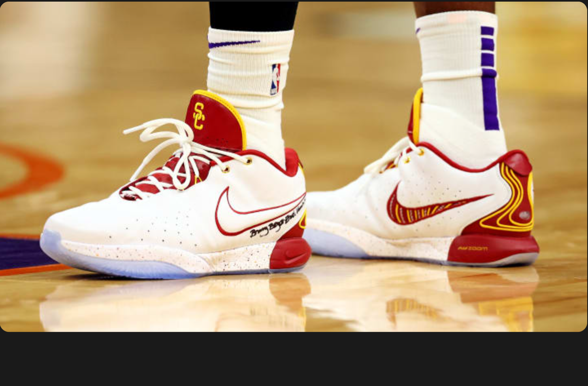
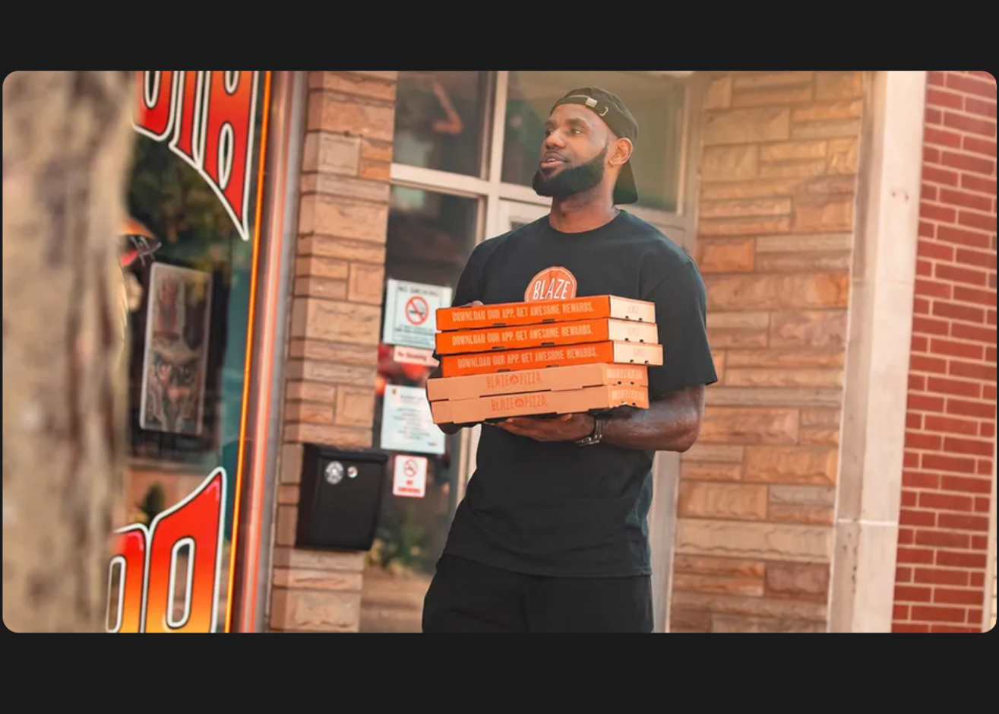
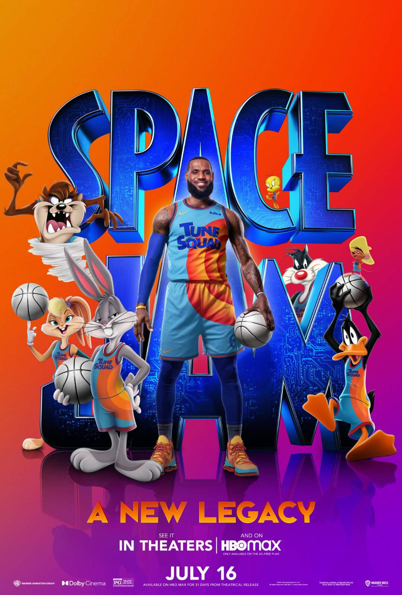
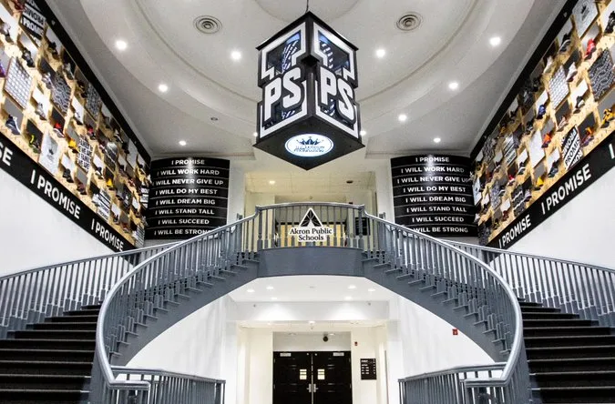
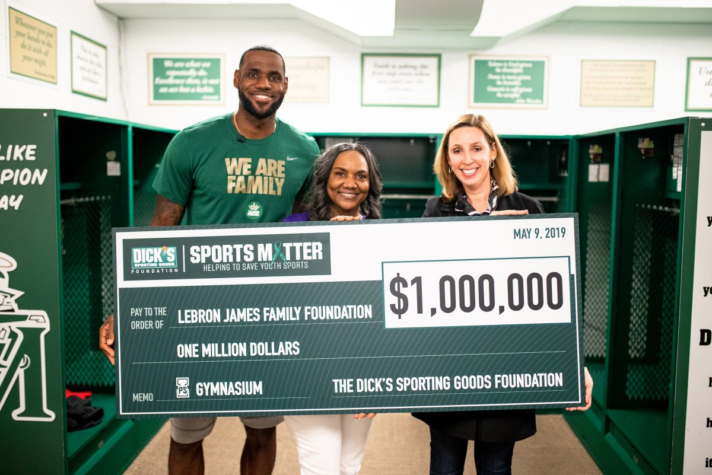

Lebron James Ventures
Beyond the basketball court, Lebron James has built an empire through business, entertainment, education, and philanthropy.

Businesses & Finance
Lebron James has established himself as a successful entrepreneur and investor. Through his company, SpringHill Entertainment, he has created content and media ventures. He is also a partner in Blaze Pizza, a fast-growing pizza chain. Additionally, Lebron has made strategic investments in various companies, including Beats by Dre (which was later acquired by Apple) and has partnerships with major brands like Nike, where he has his own signature shoe line. His business acumen extends to real estate and technology investments, making him one of the most successful athlete-entrepreneurs in history.

Movies & Television
Lebron James has made significant strides in the entertainment industry. He starred in and produced "Space Jam: A New Legacy" (2021), a sequel to the original Space Jam film. He also produces "The Shop: Uninterrupted," a talk show series where athletes and celebrities discuss various topics in a barbershop setting. Through SpringHill Entertainment, Lebron has produced numerous projects including documentaries, scripted series, and digital content. His production company focuses on telling stories that inspire and empower, particularly those from underrepresented communities.


Education
Education is a cornerstone of Lebron's off-court impact. In 2018, he opened the I Promise School in his hometown of Akron, Ohio, in partnership with the Akron Public Schools. The school serves at-risk students and their families, providing not just education but also comprehensive support including meals, transportation, and resources for parents. The school follows a unique curriculum and extended school year model. Additionally, Lebron has established scholarship programs, including the "I Promise" program that guarantees college tuition at the University of Akron for graduates of the I Promise School. His commitment to education extends beyond his hometown, inspiring similar initiatives nationwide.
Philanthropy
Through the LeBron James Family Foundation, Lebron has made a profound impact on communities, particularly in Akron, Ohio. The foundation focuses on education, family support, and community development. Beyond the I Promise School, the foundation provides housing assistance, job training programs, and various community events. Lebron has also been involved in numerous charitable initiatives, including disaster relief efforts, supporting voting rights, and advocating for social justice. His philanthropic work demonstrates a deep commitment to creating opportunities and positive change, especially for children and families facing challenges. The foundation's work has touched thousands of lives and continues to expand its reach and impact.
